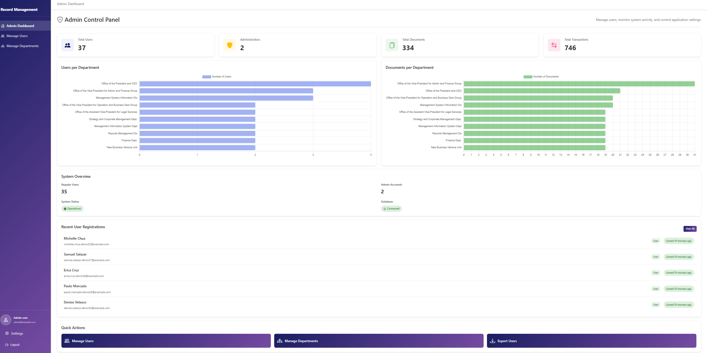
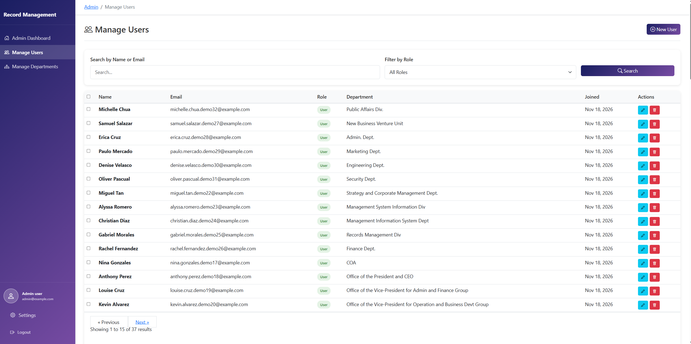
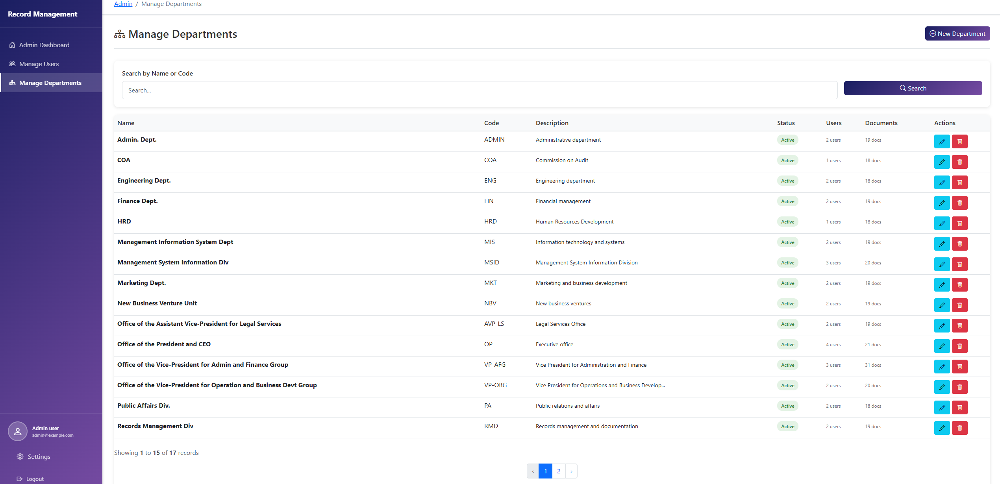
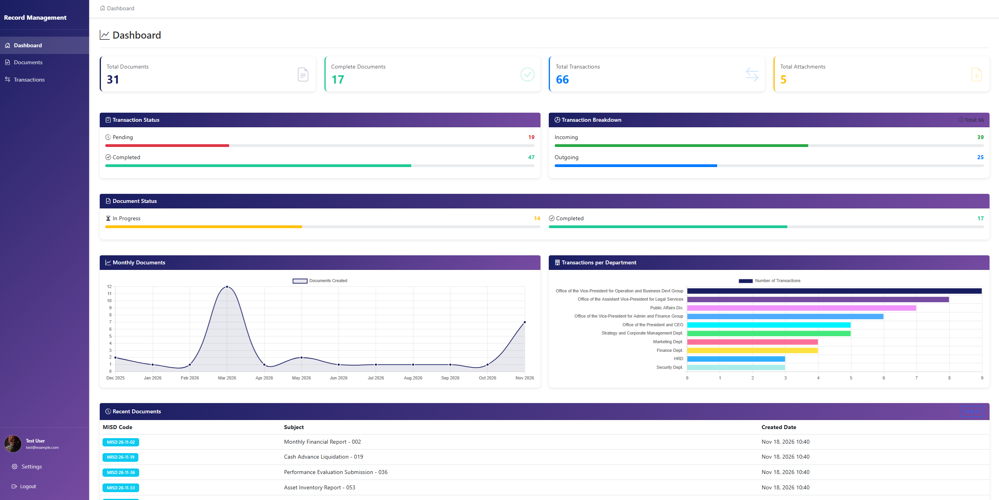
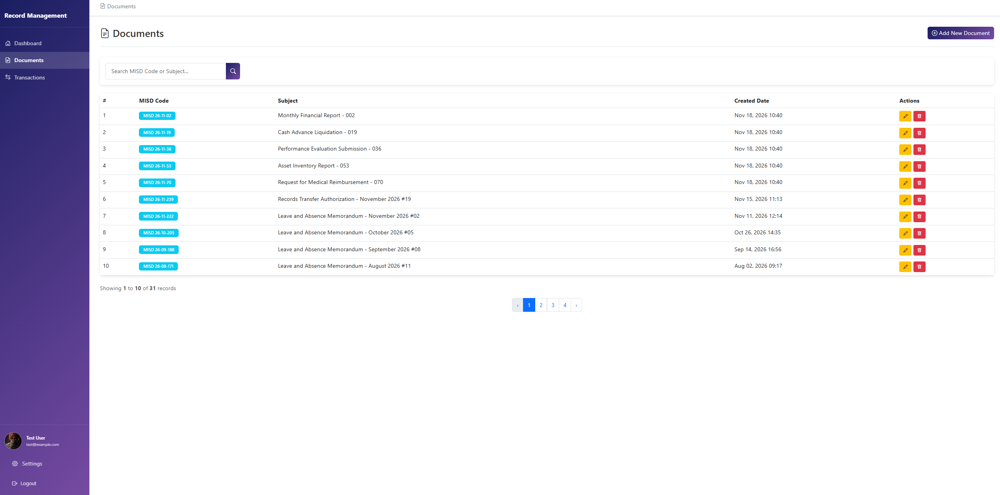
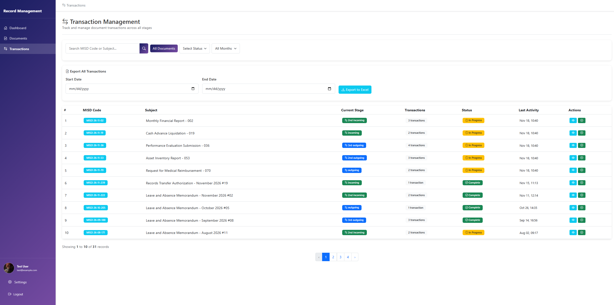
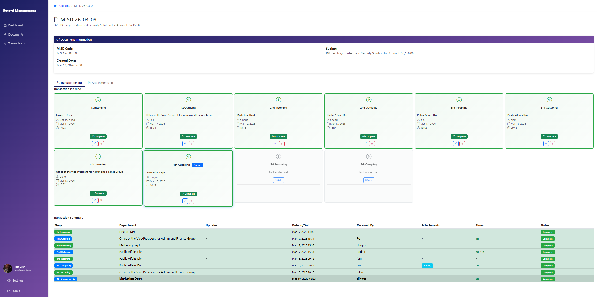
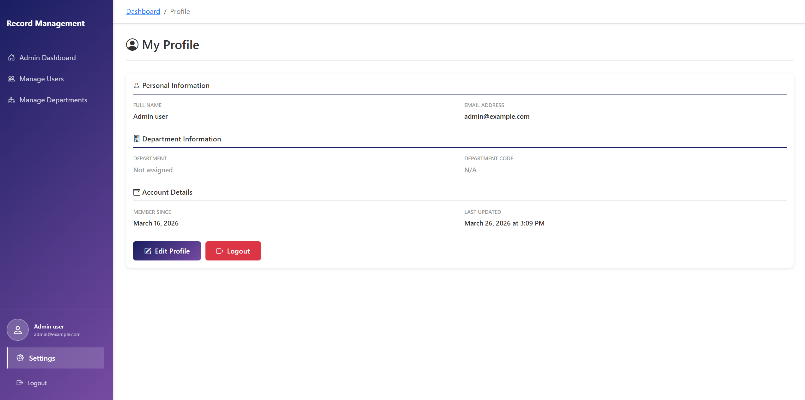
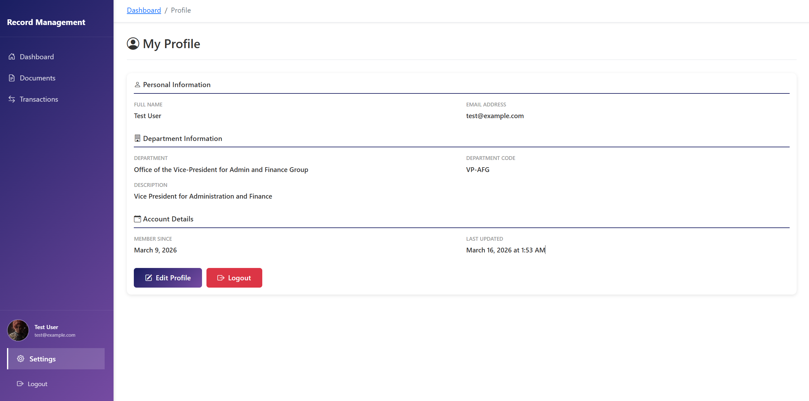

Centralized tracking
MISD codes, current stages, transaction status, and last activity make each document easier to locate.
Internship Project / Document Workflow
During my internship at Clark International Airport Corporation, I solo-developed a company-wide document transaction system to strengthen internal workflows across 17 departments.
The system uses role-based access for administrators and regular employees, generated reference codes, transaction history, attachments, and audit trails. It replaces scattered manual tracking with a clearer, searchable record of where each document is and what happened to it.
System walkthrough
The system gives each role a focused workspace while keeping document information and transaction history connected.









Impact
MISD codes, current stages, transaction status, and last activity make each document easier to locate.
Role-based access, department ownership, attachments, and audit trails create a reliable record of activity.
Dashboard analytics and Excel exports support monitoring, reporting, and operational decisions.